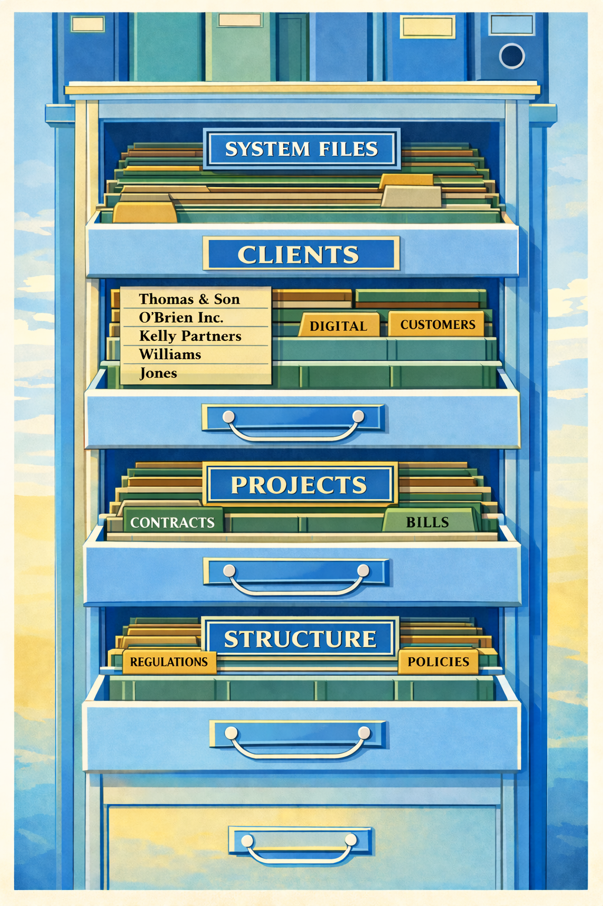

Getting back to basics
Digital Hygiene
Digital hygiene is the set of small habits and structures that keep digital work organised and predictable.
Folders, naming rules, permissions, inbox discipline, and backups are not exciting topics - but they quietly determine whether systems remain usable or slowly collapse into chaos.
Waylight approaches digital organisation the same way offices once approached paper: with simple structures that survive everyday work.
This guidance is intentionally open so organisations can apply it independently. Waylight also provides hands-on implementation where capacity is limited and faster delivery is needed. Demonstration builds are available on the Workbench.

When Work Was Physical
Before computers, offices solved the same organisational problems using simple physical systems.
Filing cabinets
Folders and labels
Registers and ledgers
In-trays and out-trays
Archive rooms
These worked because they followed clear rules:
- everything had a place
- names were consistent
- responsibilities were visible
- old material was archived
Digital work still needs these same structures - the tools simply changed.
Common Friction
Why digital workspaces become messy
Digital chaos usually grows gradually. Small shortcuts become habits, and habits become disorder.
| Common cause | What this looks like | Why it matters |
|---|---|---|
| Inbox used as storage | Important files and decisions stay buried in email threads instead of shared folders. | People cannot reliably find the latest version, and knowledge is trapped in individual inboxes. |
| Duplicate documents | Multiple files with similar names exist across folders and emails. | Teams waste time comparing versions and may act on outdated information. |
| Unclear folder structure | Folders are named inconsistently or grouped by personal habit rather than shared logic. | Work slows down because nobody is sure where items belong or where to look. |
| Personal desktops replacing shared systems | Key files sit on individual desktops, downloads, or private cloud spaces. | Continuity depends on one person, creating operational and handover risk. |
| Lack of ownership | No clear responsibility for keeping folders, permissions, and records in order. | Without ownership, disorder accumulates and trust in the system declines. |
Without shared structure, people improvise. Over time, that makes work slower and harder to trust.
Detailed Explanations
Common causes explained in plain English
Issue 1 Inbox used as storage
What it means: Email becomes the filing system. People leave files, approvals, and key decisions inside old threads.
Why it causes problems: Email is good for messages, not long-term record keeping. It is difficult to search consistently across staff and nearly impossible to govern properly.
Practical fix: Move final files and decisions to shared folders using consistent names and locations, then use email only as a communication route.
Issue 2 Duplicate documents
What it means: Many copies of the same document exist with slight naming differences.
Why it causes problems: Teams spend time checking which version is current, and mistakes happen when old copies are reused.
Practical fix: Keep one live version in an agreed folder path, archive superseded files, and apply simple version naming.
Issue 3 Unclear folder structure
What it means: Folder trees grow without a shared logic, so each team member navigates differently.
Why it causes problems: People cannot predict where to save or find files, and every task takes longer than it should.
Practical fix: Build a clear top-level folder spine and publish simple naming rules everyone can follow.
Issue 4 Personal desktops replacing shared systems
What it means: Critical files live on one person's desktop, downloads, or personal cloud account.
Why it causes problems: Continuity breaks when that person is absent, leaves, or changes device.
Practical fix: Keep working files in shared platforms by default, with clear ownership and backup responsibility.
Issue 5 Lack of ownership
What it means: Nobody is accountable for maintaining folder quality, permissions, archive hygiene, or retention rules.
Why it causes problems: Small issues are never corrected, so disorder accumulates silently.
Practical fix: Assign named owners for each area and review permissions and structure on a repeat cycle.
Waylight Delivery
What Waylight delivers
Waylight applies digital hygiene in three practical ways, depending on what an organisation needs most.
| Delivery route | Focus |
|---|---|
| 1. Building new websites | Clean, fast websites with clear navigation and simple maintenance. |
| 2. Repairing or replacing old websites | Fix fragile or confusing sites, remove unnecessary complexity, and rebuild what cannot be repaired. |
| 3. Fixing the systems behind the website | Reorganise filing systems (especially SharePoint, Teams, and shared drives), improving naming, folders, permissions, and backups. |
Structure
The Pillar Approach
Waylight uses a core pillar structure to organise digital systems clearly. These become the top-level folder spine in systems like SharePoint or Google Drive.
| Pillar | Purpose |
|---|---|
| Clients | Client-specific records, communications, and deliverables. |
| Projects | Active work in progress with live task and file sets. |
| Operations | Day-to-day internal processes and administrative systems. |
| Reference | Reusable guidance, policies, and templates. |
| Archive | Completed work retained under clear historical rules. |
Governance
Governance, compliance, and archive management
Stable systems are kept in place by clear, repeatable rules. These controls keep systems understandable and dependable without making work complicated.
| Control area | How it is applied |
|---|---|
| Ownership of folders | Named owners are accountable for quality and structure. |
| Permission reviews | Access is checked on a regular cycle to reduce security drift. |
| Retention rules | Information is kept for the right period, then archived or removed consistently. |
| Versioning | Current and historical versions are clearly distinguishable. |
| Auditability | Changes and decisions can be traced without heavy process overhead. |
| Archive management | Completed work moves from Projects to Archive with consistent naming, indexing where needed, and periodic tidy cycles. |
The result is a cleaner live workspace while preserving important history.
Page Summary
The Waylight Digital Hygiene Method
Diagnose the mess
Identify where inbox storage, duplicate files, weak folder structures, and unclear ownership are slowing work down.
Apply practical structure
Build or repair websites and organise the systems behind them so day-to-day management is straightforward.
Organise by pillars
Use Clients, Projects, Operations, Reference, and Archive as the folder spine in SharePoint or Google Drive.
Keep it stable
Maintain quality through ownership, permissions, retention, versioning, auditability, and disciplined archive cycles.